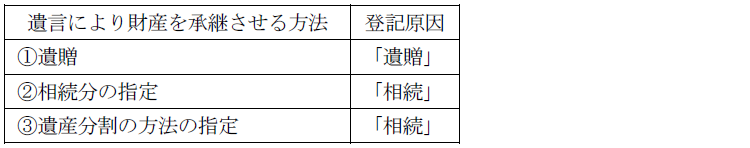
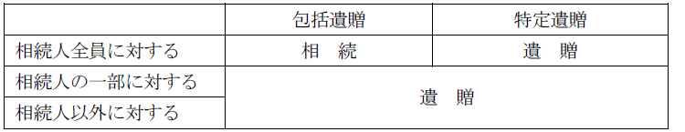

第１編 各 論
第１章 所有権の登記
第２節 所有権移転の登記
Ⅱ 相続の登記
不動産の所有者が当該不動産を遺贈する旨の遺言をして死亡したときは、遺贈者の死亡によって、当該不動産の所有権は受遺者に移転する。相続人に所有権が移転しないため、共同相続の登記をする必要はない（登研97P.43参照）。
【申請例24 所有権移転 遺贈（遺言執行者申請）】
事例： Ａは、令和○年6月28日、死亡した。Ａは、生前、「甲土地をＢに遺贈する。遺言執行者をＤとする。」旨の公正証書遺言を作成していた。Ａの相続人は、Ｃのみである。土地の課税標準の額は、金1000万円である。
1. 申請情報の内容
(1) 遺贈と相続
不動産の一部が遺贈された場合、遺贈による登記を先に申請し、その後に相続登記を申請する。
(2) 登記原因及びその日付
登記原因は、包括遺贈・特定遺贈にかかわらず「遺贈」と記載し、日付は被相続人の死亡日を記載する。遺言は、原則として遺言者の死亡の時からその効力を生ずるので（民法985条1項）、遺贈の効力も、原則として遺言者の死亡の時から生ずるからである。
(3) 申請人
(a) 共同申請
①登記権利者：受遺者
②登記義務者
遺言執行者がいる場合：遺言執行者
遺言執行者がいない場合：相続人全員
遺言執行者からの申請の場合、申請書に遺言執行者の氏名は記載せず、「義務者 亡○○(被相続人の氏名)」と記載する。相続人全員からの申請の場合、「亡○○(被相続人の氏名）相続人△△(相続人の氏名)」と記載する。
(b) 単独申請（不登法63条3項）
遺贈（相続人に対する遺贈に限る。）による所有権の移転の登記は、60条の規定にかかわらず、登記権利者が単独で申請することができる（不登法63条3項）。
(4) 添付情報
①登記原因証明情報（61条、不登令別表30添付情報イ）
遺言書及び遺言者の死亡を証する情報（戸籍謄本等）
②登記識別情報（22条本文）
遺贈者（被相続人）が所有権を取得した際の登記識別情報
③印鑑証明書（不登令16条2項、18条2項）
遺言執行者が登記義務者→遺言執行者の印鑑証明書
相続人全員が登記義務者→相続人全員の印鑑証明書
④代理権限証明情報（不登令7条1項2号）
・遺言執行者の代理権限を証する情報を提供する。
具体的には、遺言によって遺言執行者が指定された場合には、遺言書及び遺言者の死亡を証する戸籍謄抄本（戸籍全部事項証明書又は戸籍個人事項証明書）を提供する（昭59.1.10民3.150）。
家庭裁判所により選任された遺言執行者が代理して申請する場合には、家庭裁判所の選任審判書を提供する。この場合、別途遺言者の死亡を証する情報の提供を要しない。
(5) 登録免許税
受遺者が相続人以外：不動産の価額×20/1000（登免法別表1.1.(2)ハ）
受遺者が法定相続人であり、そのことを証する情報（戸籍謄本等）を提供した場合：不動産の価額×4/1000（平15.4.1民2.1022、登免法別表1.1.(2)イ）
2. 遺言書の読み取り
(1) 遺言によって遺言者が自己の財産を承継させる方法

(2) 読み取り
① まず、通常遺言者の意思は、遺言書の文言に表されているはずであるから、文言どおりに解釈する。
↓しかし
②-1 文言が「遺贈」とあっても、相続分の指定、遺産分割の方法の指定と解される場合には、登記原因は、「相続」である。
・総財産を全ての相続人に「遺贈する」（ex．「全ての財産を相続人の全員に均等に遺贈する。」）
②-2 文言が「相続」とあっても、財産を承継する者が相続人でない場合には、登記原因は「遺贈」である（ex．子が生存している場合の孫、法人等）。
・特定の不動産を相続人以外の者に「相続させる」（ex．「甲土地を孫Ｂに相続させる。」）

3. 遺言執行者の申請権限
遺言執行者は、遺言執行に必要な登記の申請権限を有する。
①包括遺贈の遺言の遺言執行者は、包括遺贈者が生前に売却し、その移転登記が未了である土地の所有権移転登記の申請の代理権限を、当然に有するか？
→ 当然に有するものではない（昭56.9.8民3.5484）。
②Ａは、甲土地をＢに遺贈し、Ｂはその登記を経由することなく甲土地をＣに遺贈するとともに遺言執行者を指定した場合、Ｃへの所有権の移転の登記の前提として、当該遺言執行者は、Ａの相続人との共同申請により、ＡからＢへの所有権の移転の登記の申請をすることができるか？
→ できる（昭43.8.3民甲1837）。
③相続財産である数筆の土地のうち、一定の面積を指定して遺贈する旨の遺言があった場合には、遺言執行者は、土地の分筆の登記の申請をし、さらに、受遺者に対する所有権の移転の登記の申請をすることができるか？
→ できる（昭45.5.30民3.435）。
④特定の不動産を特定の相続人に「相続させる」旨の遺言による、相続人に対する所有権移転登記は、当該相続人が単独で申請することができる。この場合において、遺言執行者が指定されているときは、遺言執行者から申請することができるか？
→ できる。「相続させる」旨の遺言は「特定財産承継遺言」にあたり、この遺言があったときは、遺言執行者は、当該共同相続人が対抗要件を備えるために必要な行為をすることができる（民法1014条2項）からである。
なお、この場合であっても、当該遺言により権利を取得した相続人による登記申請も可能である（令1.6.27民2.68）。
⑤受遺者を遺言執行者に指定することもでき、この場合には、受遺者は権利者兼義務者として、事実上、単独で遺贈による所有権移転登記を申請することができる（大9.5.4民1307）。
⑥不動産の死因贈与契約においてその執行者に選任された受贈者は、申請情報と併せて贈与者の死亡を証する情報及び贈与者の印鑑証明書付きの死因贈与契約書を提供して、贈与を原因とする所有権移転登記を申請することができる。
4. 登記申請の可否
①遺贈は、遺言者の死亡以前に受遺者が死亡したときはその効力を生じず（民法994条1項）、遺言者がその遺言に別段の意思を表示したときを除き、受遺者が受けるべきであったものは、相続人に帰属する（民法995条）。
②不動産を遺贈する旨の遺言と抵触する生前処分（売買等）を原因とする所有権移転登記が「錯誤」を原因として抹消されている場合、当該遺言による「遺贈」を登記原因として所有権移転の登記を申請することができる（平4.11.25.民3.6568）。
③「遺言執行者は相続財産中の不動産を売却し、借金を返済した上で残額をＡに遺贈する」旨の遺言をして死亡した遺言者があった場合に、遺言執行者が不動産を第三者に売却したときは、買主名義に所有権移転登記をする前提として、相続による所有権移転登記をする必要があるか？
→必要がある（昭45.10.5民甲4160）。
配偶者居住権とは、被相続人の配偶者が被相続人の財産に属した建物に居住していた場合に居住建物の全部を無償で使用収益できる権利である（民法1028条）。配偶者居住権は登記することができ、居住建物の所有者は登記申請義務を負う（民法1031条）。
【申請例25 配偶者居住権設定】
事例： 甲建物の所有者Ａは、令和○年1月28日、死亡した。Ａの相続人は、配偶者Ｂ及び子Ｃである。令和○年6月28日、ＢとＣとの間で、甲建物をＣが取得し、甲建物について、Ｂのための配偶者居住権を設定する旨の遺産分割協議が成立した。Ｂは、Ａの相続開始時に、甲建物に居住していた。なお、甲建物の相続による所有権移転登記はすでに申請しているものとする。甲建物の課税標準の額は、金1000万円である。
1. 申請情報の内容
(1) 登記原因及びその日付
登記原因は「年月日遺産分割」「年月日遺贈」「年月日死因贈与（※）」のいずれかである（令2.3.30民二.324）。
日付は、配偶者居住権の発生事由に応じて以下のようになる。
①遺産分割により発生した場合
：遺産分割の協議の成立日、調停の成立日、審判の確定日
②遺贈により発生した場合：遺贈の効力発生日
(2) 登記事項（81条の2）
・存続期間（絶対的登記事項）
【記載方法】
①存続期間の定めがない場合
「存続期間 配偶者居住権者の死亡時まで」
「存続期間 年月日から配偶者居住権者の死亡時まで」
②存続期間の定めがある場合
「存続期間 年月日から○年又は配偶者居住権者の死亡時までのうち、いずれか短い期間」
「存続期間 年月日から年月日まで又は配偶者居住権者の死亡時までのうち、いずれか短い期間」
別段の定めがなければ配偶者居住権者の終身の間存続し、遺産分割協議若しくは遺言に別段の定めがあるとき、または家庭裁判所が遺産分割の審判において別段の定めをしたときは、その定めによる（民法1030条）。
・第三者に居住建物の使用又は収益をさせることを許す旨の定めがあるときは、その定め（相対的登記事項）
【記載方法】
「特約 第三者に居住建物の使用又は収益をさせることができる」
(3) 申請人
配偶者を権利者、建物所有者を義務者とする共同申請による（60条）。
配偶者居住権を遺贈により取得した場合において、遺言執行者があるときは、遺言執行者が登記義務者となるものと解される（令2.3.30民二.324）。
遺産分割の調停調書謄本・審判書謄本（確定証明書付）を添付する場合、配偶者が単独で申請することもできる。
(4) 添付情報
・登記原因証明情報（61条、不登令別表30添付情報イ）
遺産分割協議書、遺産分割の調停調書謄本、遺言書などが登記原因証明情報となる。
配偶者居住権が成立するには、配偶者が相続開始時に被相続人所有の建物に居住していたことが必要であるが（民法1028条1項）、必ずしも当該配偶者の住民票の写し等の提供を要せず、登記原因証明情報中でその旨が明らかになっていれば足りる（令2.3.30民二.324）。
配偶者居住権を取得できる配偶者は、相続開始時に婚姻をしていた者に限られるが、登記原因証明情報として必ずしも被相続人の住民票の除票の写しを提供する必要はなく、登記原因証明情報中でその旨が明らかになっていれば足りる（令2.3.30民二.324）。
・登記識別情報
共同申請の場合、建物所有者の登記識別情報を添付する。
・印鑑証明書
共同申請の場合、建物所有者の印鑑証明書を添付する。
(5) 登録免許税
不動産の価額×2/1000
2. 登記申請の可否
①特定財産承継遺言によって配偶者居住権を取得することはできないのが原則であるが、「遺贈」を登記原因として配偶者居住権の設定の登記を申請し、配偶者に配偶者居住権を相続させる旨の記載のある遺言書を登記原因証明情報として提供する場合には、遺言書全体の記載からこれを遺贈と解することに特段の疑義が生じなければ、当該設定登記を申請することができる（令2.3.30民二.324）。
②配偶者居住権の存続期間を定めた場合には、その延長や更新はできないとされているため、存続期間の延長や更新を内容とする登記はできない。しかし、登記原因証明情報として、配偶者居住権者が存続期間の一部を放棄した旨の情報を提供した場合には、存続期間を終身の間より短期とする配偶者居住権の設定登記を申請することができる。また、配偶者居住権の存続期間を短縮する変更登記も申請することができる（令2.3.30民二.324）。
③配偶者居住権は譲渡できないため（民法1032条2項）、配偶者居住権の移転を内容とする登記は申請することができない（令2.3.30民二.324）。
3. 配偶者居住権の消滅
存続期間が満了したときは、配偶者居住権の抹消の登記を申請する。
(1) 登記の目的
「○番配偶者居住権抹消」である。
(2) 登記原因及びその日付
登記原因は以下の通りである。
配偶者居住権者死亡の場合：「年月日死亡による消滅」
存続期間の満了の場合：「年月日存続期間満了」
合意消滅の場合：「年月日合意消滅」
消滅請求の場合：「年月日消滅請求」
(3) 申請人
所有者と配偶者の共同申請による。配偶者死亡の場合、不登法69条の規定に基づき、所有者が単独で配偶者居住権の抹消登記を申請することができる（令2.3.30民二.324）。
4. 第三者に居住建物を使用又は収益させることに基づく登記
配偶者居住権に賃借権を設定する場合、登記の目的・登記原因は以下のようになる。
※登記事項は通常の賃借権と同様である
①配偶者居住権者が行う賃借権設定の登記は、付記登記による。
②原則として、居住建物の所有者の承諾を証する情報の提供が必要だが、当該建物の使用又は収益を許す旨の定めがある場合には不要である。
③賃借権を抹消するときの登記の目的は「○番付記1号賃借権抹消」となる。
原因は「年月日解約」「年月日放棄」「年月日存続期間満了」となる。
④賃借権の登記のされている配偶者居住権の登記が抹消された場合には、配偶者居住権に設定された賃借権の登記は職権で抹消される。
胎児は、相続については、既に生まれたものとみなされるので（民法886条1項）、胎児名義の相続の登記を申請することが認められている（明31.10.19民刑1406）。死産を法定の解除条件として胎児にも制限的に権利能力を認める考え方である（解除条件説）。胎児名義の相続の登記も、通常の相続の登記と同じである。
もっとも、相続・遺贈・不法行為に基づく損害賠償請求以外には、胎児に権利能力は認められないため、胎児の母が胎児を代理して売買等をすることはできず、当該代理行為に基づく登記の申請はすることができない。
胎児の出生前においては相続関係が未確定の状態にあるため、胎児のための遺産分割その他の処分行為をすることはできない（昭29.6.15民甲1188）。
【申請例26 所有権移転 胎児名義】
事例： 土地所有者Ａは、令和○年6月1日、死亡した。Ａの相続人は、懐胎中の妻ＢとＡの父Ｄのみである。土地の課税標準の額は、金1000万円である。
(1) 申請人
胎児については、「何某（母の氏名）胎児」と記載する（令5.3.28民二.538）。
(2) 添付情報
Ｂ胎児が相続人であることを証する書面の提供は不要である。近い将来、胎児が出生又は死産したときに再度登記を申請するので、登記の真正は担保されるからである。
※胎児名義の登記後、胎児が出生した場合は登記名義人住所・氏名変更登記を申請し、死産の場合は更正登記又は抹消の登記を申請する。どちらの場合も、母が代理して申請する。
【申請例27 住所・氏名の変更 胎児の出生】
事例： 令和○年6月28日、Ｂの懐胎していた子Ｃが出生した。
・添付情報
出生した者の戸籍抄本、住民票の写し等の提供が必要となる。
【申請例28 所有権更正 胎児の死産】
事例： Ｂの懐胎していた子は、死産であった。Ａの父Ｄが生存している。